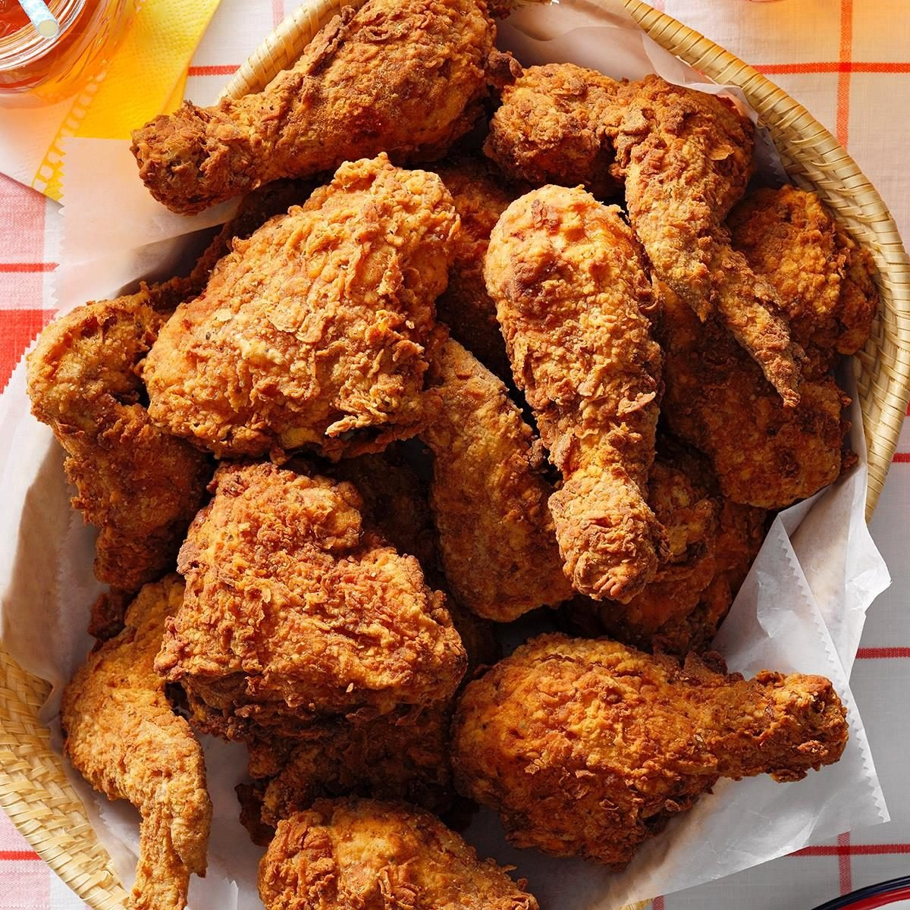

Fried Chicken

Description
Authentic fried chicken is defined by a dramatic sensory contrast where a shatteringly crispy,
golden-brown crust protects an incredibly succulent and tender interior. This "craggy" exterior is achieved through a seasoned flour dredge
that develops deep ridges and air bubbles during the frying process, creating an audible crunch that gives way to steaming,
flavor-infused meat. The flavor profile is predominantly savory and rich, often heightened by a long soak in a tangy buttermilk brine and a blend of aromatic spices like garlic, paprika, and black pepper.
Whether it is the thick, crusted coating of traditional Southern style or the glass-like, double-fried skin of Korean varieties, high-quality fried chicken remains perfectly moist and glistening without being overly greasy.
Each bite delivers a complex balance of salt, heat, and umami, making it a globally beloved comfort food celebrated for its addictive texture and deep, fried richness.
Ingredients
- 1 whole chicken, cut into 8 pieces
- 1 cup buttermilk
- 1 cup all-purpose flour
- 1 tsp salt
- 1/2 tsp black pepper
- 1/2 tsp paprika
- 1/2 tsp garlic powder
- Oil for frying (vegetable or peanut oil)
Instructions
- In a large bowl, soak the chicken pieces in buttermilk for at least 1 hour (or overnight for best results).
- In another bowl, mix the flour, salt, pepper, paprika, and garlic powder.
- Heat oil in a deep fryer or large skillet to 350°F (175°C).
- Remove chicken from buttermilk, allowing excess to drip off, then dredge each piece in the seasoned flour mixture, pressing to adhere.
- Carefully place the coated chicken pieces into the hot oil, frying in batches to avoid overcrowding.
- Fry for about 12-15 minutes, turning occasionally, until golden brown and cooked through (internal temperature should reach 165°F or 74°C).
- Remove chicken from oil and drain on paper towels.
- Let rest for a few minutes before serving to allow juices to redistribute.